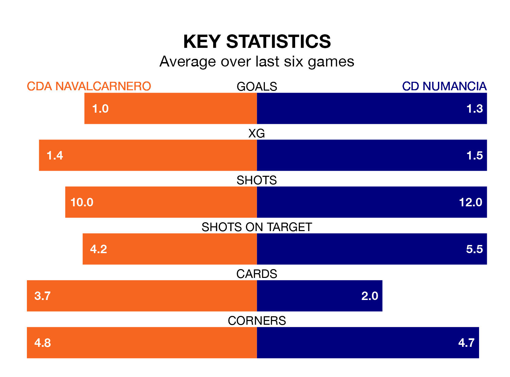

Struggling CDA Navalcarnero face CD Numancia at the Estadio Municipal Mariano González on Sunday looking to build on a win in their last league outing.
After securing all three points with a 0-2 victory over Illescas on February 18, CDA Navalcarnero sit 16th in the Segunda División RFEF Group 5.
They travel to play a Numancia side fourth in the standings, who lost in their last match, 1-0 against CD Badajoz.
With 37 goals in 23 games so far this season, Numancia are the league's highest scorers with 1.6 goals per game. And they are conceding at an average rate, letting in 25 goals at a rate of 1.1 per game.
CDA Navalcarnero, meanwhile, are below average scorers, with 0.9 goals per game, compared to a league average of 1.1. They have conceded 1.3 goals per game.
The home team are in mixed form in the Segunda División RFEF Group 5, with two wins and two draws from their last six games.
With three wins and three losses over that period, the visitors' form is slightly better – they have taken nine points from 18, compared to CDA Navalcarnero's eight.
Updated: 12:18 (UTC), 19/02/24